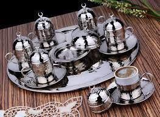
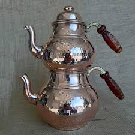
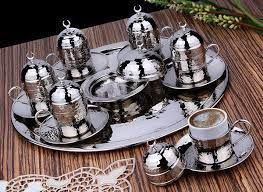
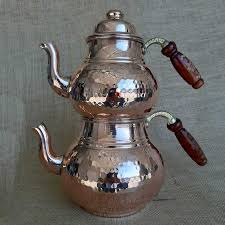
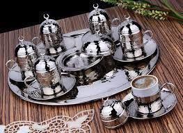
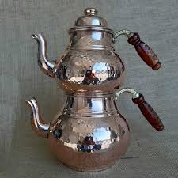
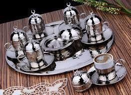
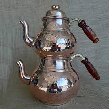

.jpg)
.jfif)
.jfif) 



.jfif) 



1516 yılında Gaziantep'e gelen Yavuz Sultan Selim bölgeyi Arap Eyaletine bağlı bir sancak merkezi yaptı. Gaziantep 1531 yılında Dulkadir Beylerbeyliği'ne (Maraş Eyaleti) bağlandı. Bu durum 1830 tarihine kadar devam etti. Ancak 1818-1830 yılları arasında Antep Sancağının vergi gelirleri Halep Eyaletine tahsis edildi.
.jfif)
.jfif)

18. yüzyılın başlarında ortaya çıkmış olan bu gelenek, padişah tarafından askerlerini hoş tutmak amacıyla yapılırdı. Her on askere bir sini olarak hazırlanarak, saray mutfağı önüne dizilerek servis edilirdi. Yeniçeri başı olan Silahtar Ağa'nın ilk siniyi almasından sonra bütün siniler Yeniçerilere verilirdi.
Antep mutfağı yaklaşık 250 özgün çeşide ev sahipliği yapmaktadır. Et ağırlıklı bir mutfaktır. Gaziantep mutfağı yemek çeşitlerindeki zenginliği dışında kurutulmuş gıdalar (patlıcan, domates, biber vb.) ve baharat çeşitliliğiyle de öne çıkmaktadır. Türkiye genelinde birçok restoran başta kırmızı pul biber olmak üzere pek çok malzemeyi Gaziantep şehrinden temin eder. Ayrıca, Türkiye'nin ilk mutfak müzesi Şahinbey'de bulunmaktadır. Gaziantep 2015 yılında UNESCO tarafından gastronomi dalında ‘Yaratıcı Şehirler Ağı‘na dahil edilmiştir.[1]